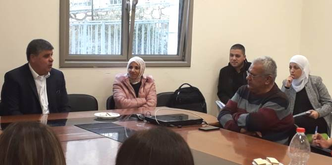
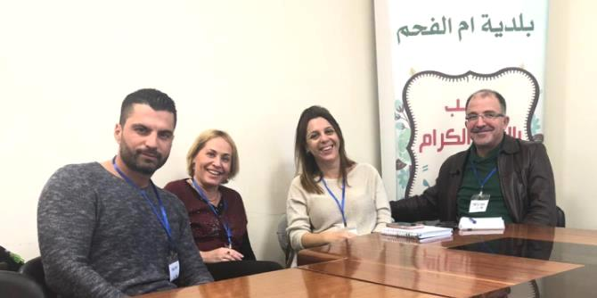

Fellows of the first cohort of the Mandel Program for Leadership in the Public Service participated in a field trip designed to enhance their familiarity with Arab society, which introduced them to sociologist Professor Khaled Abu-Asbeh, nonprofit director Uri Kandel, and Samir Mahamid, the mayor of Umm al-Fahm.
At the start of the study tour, the fellows and faculty of the program visited the Umm al-Fahm Art Gallery. Founded in 1996 by the artist Said Abu Shakra, the gallery showcases contemporary Arab art.
Next, the fellows met with sociologist Professor Khaled Abu-Asbeh and discussed Arab society as a society undergoing change and crisis. Professor Abu-Asbeh explained that various social and cultural patterns that endured for generations are now dying out, and this is enabling Arabs in Israel to integrate into Israeli society both economically and socially. As he explained, one of the main changes in this context is related to the place of women in Arab society; the role of women in society is becoming more dominant than in the past as more and more women receive an academic education and enter positions of influence.
Alongside positive and optimistic developments, Professor Abu-Asbeh also noted the emergence of various crises in family life and in the family unit in the Arab sector: Arabic public education is being eroded, while private education is flourishing; government policies regarding education in the Arab sector are being set without consultation with Arab society; and young adults who work in hi-tech are leaving their villages and towns and are not investing in life there. The possible solutions suggested for these challenges included strengthening civic society so that it is better able to work within and on behalf of Arab society; changing the organizational culture in local government; and increasing government involvement.

Next, the fellows met with Uri Kandel, executive director of Shared Paths, a joint Jewish-Arab nonprofit that operates locally-guided tours of Arab towns throughout Israel in order to introduce people to Arab society. Through these tours, the organization aims to educate visitors about the history of Arab society and the challenges it faces today, as well as to enable them to appreciate the rich cultural diversity of Arab society.
At the Umm al-Fahm municipality, the fellows met with Mayor Dr. Samir Mahamid, who left his career in education to enter politics. Dr. Mahamid presented the difficulties he faces as mayor, which include the need to combat violence, transportation problems, improving education, improving the city’s public image, and more, both on a national level (e.g., government bureaucracy and budgets) and on a local level. He also noted the traditional power of the hamula in Arab society as a barrier to change.
In closing, the participants discussed their experiences over the course of the day. They focused on the gap between the city’s image and what is actually happening on the ground; their lack of familiarity with different societies; the impact of the human tendency toward generalization; the fear of the unknown; and the fact that we are all heavily influenced by the media, which chooses to present only the extremes.

{kind=link}
{kind=link}
{kind=link}